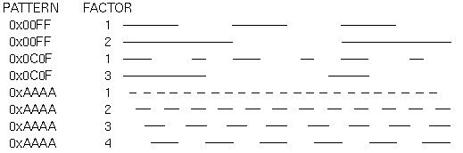
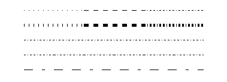

After reading this chapter, you'll be able to do the following:
Draw with any geometric primitive - points, lines, and polygons - in
two or three dimensions
Control the display of those primitives - for example, draw dashed lines
or outlined polygons
Specify normal vectors at appropriate points on the surface of solid
objects
Force any pending drawing to complete
At the highest level of abstraction, there are three basic drawing operations: clearing the window, drawing a geometric object, and drawing a raster object. Raster objects, which include such things as two-dimensional images, bitmaps, and character fonts, are covered in Chapter 8 . In this chapter, you learn how to clear the screen and to draw geometric objects, including points, straight lines, and flat polygons.
You might think to yourself, "Wait a minute. I've seen lots of computer graphics in movies and on television, and there are plenty of beautifully shaded curved lines and surfaces. How are those drawn, if all OpenGL can draw are straight lines and flat polygons?" Even the image on the cover of this book includes a round table and objects on the table that have curved surfaces. It turns out that all the curved lines and surfaces you've seen are approximated by large numbers of little flat polygons or straight lines, in much the same way that the globe on the cover is constructed from a large set of rectangular blocks. The globe doesn't appear to have a smooth surface because the blocks are relatively large compared to the globe. Later in this chapter, we show you how to construct curved lines and surfaces from lots of small geometric primitives.
This chapter has the following major sections:
"Describing Points, Lines, and Polygons" shows you what the set of primitive
geometric objects is and how to draw them.
"Displaying Points, Lines, and Polygons" explains what control you have
over the details of how primitives are drawn - for example, what diameter
points have, whether lines are solid or dashed, and whether polygons are
outlined or filled.
"Normal Vectors" discusses how to specify normal vectors for geometric
objects and (briefly) what these vectors are for.
"Some Hints for Building Polygonal Models of Surfaces" explores the issues and techniques involved in constructing polygonal approximations to surfaces.
At this point, you might be wondering why we keep talking about clearing the window - why not just draw a rectangle of the appropriate color that's large enough to cover the entire window? First, a special command to clear a window can be much more efficient than a general-purpose drawing command. In addition, as you'll see in Chapter 3 , OpenGL allows you to set the coordinate system, viewing position, and viewing direction arbitrarily, so it might be difficult to figure out an appropriate size and location for a window-clearing rectangle. Also, you can have OpenGL use hidden-surface removal techniques that eliminate objects obscured by others nearer to the eye; thus, if the window-clearing rectangle is to be a background, you must make sure that it's behind all the other objects of interest. With an arbitrary coordinate system and point of view, this might be difficult. Finally, on many machines, the graphics hardware consists of multiple buffers in addition to the buffer containing colors of the pixels that are displayed. These other buffers must be cleared from time to time, and it's convenient to have a single command that can clear any combination of them. (All the possible buffers are discussed in Chapter 10 .)
As an example, these lines of code clear the window to black:
glClearColor(0.0, 0.0, 0.0, 0.0); glClear(GL_COLOR_BUFFER_BIT);The first line sets the clearing color to black, and the next command clears the entire window to the current clearing color. The single parameter to glClear() indicates which buffers are to be cleared. In this case, the program clears only the color buffer, where the image displayed on the screen is kept. Typically, you set the clearing color once, early in your application, and then you clear the buffers as often as necessary. OpenGL keeps track of the current clearing color as a state variable rather than requiring you to specify it each time a buffer is cleared.
Chapter 5 and Chapter 10 talk about how other buffers are used. For now, all you need to know is that clearing them is simple. For example, to clear both the color buffer and the depth buffer, you would use the following sequence of commands:
glClearColor(0.0, 0.0, 0.0, 0.0); glClearDepth(0.0); glClear(GL_COLOR_BUFFER_BIT | GL_DEPTH_BUFFER_BIT);In this case, the call to glClearColor() is the same as before, the glClearDepth() command specifies the value to which every pixel of the depth buffer is to be set, and the parameter to the glClear() command now consists of the logical OR of all the buffers to be cleared. The following summary of glClear() includes a table that lists the buffers that can be cleared, their names, and the chapter where each type of buffer is discussed.void glClearColor(GLclampf red, GLclampf green, GLclampf blue, GLclampf alpha);
Sets the current clearing color for use in clearing color buffers in RGBA mode. For more information on RGBA mode, see Chapter 5 . The red, green, blue, and alpha values are clamped if necessary to the range [0,1]. The default clearing color is (0, 0, 0, 0), which is black.
void glClear(GLbitfield mask);
Clears the specified buffers to their current clearing values. The mask argument is a bitwise-ORed combination of the values listed in Table 2-1 .
| Buffer | Name | Reference |
|---|---|---|
| Color buffer | GL_COLOR_BUFFER_BIT | Chapter 5 |
| Depth buffer | GL_DEPTH_BUFFER_BIT | Chapter 10 |
| Accumulation buffer | GL_ACCUM_BUFFER_BIT | Chapter 10 |
| Stencil buffer | GL_STENCIL_BUFFER_BIT | Chapter 10 |
Before issuing a command to clear multiple buffers, you have to set the values to which each buffer is to be cleared if you want something other than the default color, depth value, accumulation color, and stencil index. In addition to the glClearColor() and glClearDepth() commands that set the current values for clearing the color and depth buffers, glClearIndex(), glClearAccum(), and glClearStencil() specify the color index, accumulation color, and stencil index used to clear the corresponding buffers. See Chapter 5 and Chapter 10 for descriptions of these buffers and their uses.
OpenGL allows you to specify multiple buffers because clearing is generally a slow operation, since every pixel in the window (possibly millions) is touched, and some graphics hardware allows sets of buffers to be cleared simultaneously. Hardware that doesn't support simultaneous clears performs them sequentially. The difference between
glClear(GL_COLOR_BUFFER_BIT | GL_DEPTH_BUFFER_BIT);and
glClear(GL_COLOR_BUFFER_BIT); glClear(GL_DEPTH_BUFFER_BIT);is that although both have the same final effect, the first example might run faster on many machines. It certainly won't run more slowly.
For example, the pseudocode
set_current_color(red); draw_object(A); draw_object(B); set_current_color(green); set_current_color(blue); draw_object(C);draws objects A and B in red, and object C in blue. The command on the fourth line that sets the current color to green is wasted.
Coloring, lighting, and shading are all large topics with entire chapters or large sections devoted to them. To draw geometric primitives that can be seen, however, you need some basic knowledge of how to set the current color; this information is provided in the next paragraphs. For details on these topics, see Chapter 5 and Chapter 6 .
To set a color, use the command glColor3f(). It takes three parameters, all of which are floating-point numbers between 0.0 and 1.0. The parameters are, in order, the red, green, and blue components of the color. You can think of these three values as specifying a "mix" of colors: 0.0 means don't use any of that component, and 1.0 means use all you can of that component. Thus, the code
glColor3f(1.0, 0.0, 0.0);makes the brightest red the system can draw, with no green or blue components. All zeros makes black; in contrast, all ones makes white. Setting all three components to 0.5 yields gray (halfway between black and white). Here are eight commands and the colors they would set:
glColor3f(0.0, 0.0, 0.0); black glColor3f(1.0, 0.0, 0.0); red glColor3f(0.0, 1.0, 0.0); green glColor3f(1.0, 1.0, 0.0); yellow glColor3f(0.0, 0.0, 1.0); blue glColor3f(1.0, 0.0, 1.0); magenta glColor3f(0.0, 1.0, 1.0); cyan glColor3f(1.0, 1.0, 1.0); whiteYou might have noticed earlier that when you're setting the color to clear the color buffer, glClearColor() takes four parameters, the first three of which match the parameters for glColor3f(). The fourth parameter is the alpha value; it's covered in detail in "Blending." For now, always set the fourth parameter to 0.0.
In addition, the application might be running on more than one machine. For example, suppose that the main program is running elsewhere (on a machine called the client), and that you're viewing the results of the drawing on your workstation or terminal (the server), which is connected by a network to the client. In that case, it might be horribly inefficient to send each command over the network one at a time, since considerable overhead is often associated with each network transmission. Usually, the client gathers a collection of commands into a single network packet before sending it. Unfortunately, the network code on the client typically has no way of knowing that the graphics program is finished drawing a frame or scene. In the worst case, it waits forever for enough additional drawing commands to fill a packet, and you never see the completed drawing.
For this reason, OpenGL provides the command glFlush(), which forces the client to send the network packet even though it might not be full. Where there is no network and all commands are truly executed immediately on the server, glFlush() might have no effect. However, if you're writing a program that you want to work properly both with and without a network, include a call to glFlush() at the end of each frame or scene. Note that glFlush() doesn't wait for the drawing to complete - it just forces the drawing to begin execution, thereby guaranteeing that all previous commands execute in finite time even if no further rendering commands are executed.
A few commands - for example, commands that swap buffers in double-buffer mode - automatically flush pending commands onto the network before they can occur. void glFlush(void);
Forces previously issued OpenGL commands to begin execution, thus guaranteeing that they complete in finite time.
If glFlush() isn't sufficient for you, try glFinish(). This command flushes the network as glFlush() does and then waits for notification from the graphics hardware or network indicating that the drawing is complete in the framebuffer. You might need to use glFinish() if you want to synchronize tasks - for example, to make sure that your three-dimensional rendering is on the screen before you use Display PostScript to draw labels on top of the rendering. Another example would be to ensure that the drawing is complete before it begins to accept user input. After you issue a glFinish() command, your graphics process is blocked until it receives notification from the graphics hardware (or client, if you're running over a network) that the drawing is complete. Keep in mind that excessive use of glFinish() can reduce the performance of your application, especially if you're running over a network, because it requires round-trip communication. If glFlush() is sufficient for your needs, use it instead of glFinish().void glFinish(void);
Forces all previously issued OpenGL commands to complete. This command doesn't return until all effects from previous commands are fully realized.
while (1) {
get_viewing_point_from_mouse_position();
glClear(GL_COLOR_BUFFER_BIT);
draw_3d_object_A();
draw_3d_object_B();
}
it might be that for some mouse positions, object A obscures object B,
and for others, the opposite relationship might hold. If nothing special
is done, the preceding code always draws object B second, and thus on top
of object A, no matter what viewing position is selected.
The elimination of parts of solid objects that are obscured by others is called hidden-surface removal. (Hidden-line removal, which does the same job for objects represented as wireframe skeletons, is a bit trickier, and it isn't discussed here. See "Hidden-Line Removal," for details.) The easiest way to achieve hidden-surface removal is to use the depth buffer (sometimes called a z-buffer). (Also see Chapter 10 .)
A depth buffer works by associating a depth, or distance from the viewpoint, with each pixel on the window. Initially, the depth values for all pixels are set to the largest possible distance using the glClear() command with GL_DEPTH_BUFFER_BIT, and then the objects in the scene are drawn in any order.
Graphical calculations in hardware or software convert each surface that's drawn to a set of pixels on the window where the surface will appear if it isn't obscured by something else. In addition, the distance from the eye is computed. With depth buffering enabled, before each pixel is drawn, a comparison is done with the depth value already stored at the pixel. If the new pixel is closer to the eye than what's there, the new pixel's color and depth values replace those that are currently written into the pixel. If the new pixel's depth is greater than what's currently there, the new pixel would be obscured, and the color and depth information for the incoming pixel is discarded. Since information is discarded rather than used for drawing, hidden-surface removal can increase your performance.
To use depth buffering, you need to enable depth buffering. This has to be done only once. Each time you draw the scene, before drawing you need to clear the depth buffer and then draw the objects in the scene in any order.
To convert the preceding program fragment so that it performs hidden-surface removal, modify it to the following:
glEnable(GL_DEPTH_TEST);
...
while (1) {
glClear(GL_COLOR_BUFFER_BIT | GL_DEPTH_BUFFER_BIT);
get_viewing_point_from_mouse_position();
draw_3d_object_A();
draw_3d_object_B(); }
The argument to glClear() clears both the depth and color buffers.
For example, one difference comes from the limitations of computer-based calculations. In any OpenGL implementation, floating-point calculations are of finite precision, and they have round-off errors. Consequently, the coordinates of OpenGL points, lines, and polygons suffer from the same problems.
Another difference arises from the limitations of a bitmapped graphics display. On such a display, the smallest displayable unit is a pixel, and although pixels might be less than 1/100th of an inch wide, they are still much larger than the mathematician's infinitely small (for points) or infinitely thin (for lines). When OpenGL performs calculations, it assumes points are represented as vectors of floating-point numbers. However, a point is typically (but not always) drawn as a single pixel, and many different points with slightly different coordinates could be drawn by OpenGL on the same pixel.
Advanced
OpenGL works in the homogeneous coordinates of three-dimensional projective geometry, so for internal calculations, all vertices are represented with four floating-point coordinates (x, y, z, w). If w is different from zero, these coordinates correspond to the euclidean three-dimensional point (x/w, y/w, z/w). You can specify the w coordinate in OpenGL commands, but that's rarely done. If the w coordinate isn't specified, it's understood to be 1.0. For more information about homogeneous coordinate systems, see Appendix G .
Figure 2-1 : Two Connected Series of Line Segments
In general, polygons can be complicated, so OpenGL makes some strong restrictions on what constitutes a primitive polygon. First, the edges of OpenGL polygons can't intersect (a mathematician would call this a simple polygon). Second, OpenGL polygons must be convex, meaning that they cannot have indentations. Stated precisely, a region is convex if, given any two points in the interior, the line segment joining them is also in the interior. See Figure 2-2 for some examples of valid and invalid polygons. OpenGL, however, doesn't restrict the number of line segments making up the boundary of a convex polygon. Note that polygons with holes can't be described. They are nonconvex, and they can't be drawn with a boundary made up of a single closed loop. Be aware that if you present OpenGL with a nonconvex filled polygon, it might not draw it as you expect. For instance, on most systems no more than the convex hull of the polygon would be filled, but on some systems, less than the convex hull might be filled.
Figure 2-2 : Valid and Invalid Polygons
For many applications, you need nonsimple polygons, nonconvex polygons, or polygons with holes. Since all such polygons can be formed from unions of simple convex polygons, some routines to describe more complex objects are provided in the GLU. These routines take complex descriptions and tessellate them, or break them down into groups of the simpler OpenGL polygons that can then be rendered. (See Appendix C for more information about the tessellation routines.) The reason for OpenGL's restrictions on valid polygon types is that it's simpler to provide fast polygon-rendering hardware for that restricted class of polygons.
Since OpenGL vertices are always three-dimensional, the points forming the boundary of a particular polygon don't necessarily lie on the same plane in space. (Of course, they do in many cases - if all the z coordinates are zero, for example, or if the polygon is a triangle.) If a polygon's vertices don't lie in the same plane, then after various rotations in space, changes in the viewpoint, and projection onto the display screen, the points might no longer form a simple convex polygon. For example, imagine a four-point quadrilateral where the points are slightly out of plane, and look at it almost edge-on. You can get a nonsimple polygon that resembles a bow tie, as shown in Figure 2-3 , which isn't guaranteed to render correctly. This situation isn't all that unusual if you approximate surfaces by quadrilaterals made of points lying on the true surface. You can always avoid the problem by using triangles, since any three points always lie on a plane.
Figure 2-3 : Nonplanar Polygon Transformed to Nonsimple Polygon
Draws the rectangle defined by the corner points (x1, y1) and (x2, y2). The rectangle lies in the plane z=0 and has sides parallel to the x- and y-axes. If the vector form of the function is used, the corners are given by two pointers to arrays, each of which contains an (x, y) pair.
Note that although the rectangle begins with a particular orientation in three-dimensional space (in the x-y plane and parallel to the axes), you can change this by applying rotations or other transformations. See Chapter 3 for information about how to do this.
Figure 2-4 : Approximating Curves
Even though curves aren't geometric primitives, OpenGL does provide some direct support for drawing them. See Chapter 11 for information about how to draw curves and curved surfaces.
Specifies a vertex for use in describing a geometric object. You can supply up to four coordinates (x, y, z, w) for a particular vertex or as few as two (x, y) by selecting the appropriate version of the command. If you use a version that doesn't explicitly specify z or w, z is understood to be 0 and w is understood to be 1. Calls to glVertex*() should be executed between a glBegin() and glEnd() pair.
Here are some examples of using glVertex*():
glVertex2s(2, 3);
glVertex3d(0.0, 0.0, 3.1415926535898);
glVertex4f(2.3, 1.0, -2.2, 2.0);
GLdouble dvect[3] = {5.0, 9.0, 1992.0};
glVertex3dv(dvect);
The first example represents a vertex with three-dimensional coordinates
(2, 3, 0). (Remember that if it isn't specified, the z coordinate
is understood to be 0.) The coordinates in the second example are (0.0,
0.0, 3.1415926535898) (double-precision floating-point numbers). The third
example represents the vertex with three-dimensional coordinates (1.15,
0.5, -1.1). (Remember that the x, y, and z coordinates are
eventually divided by the w coordinate.) In the final example, dvect
is a pointer to an array of three double-precision floating-point numbers.
On some machines, the vector form of glVertex*() is more efficient, since only a single parameter needs to be passed to the graphics subsystem, and special hardware might be able to send a whole series of coordinates in a single batch. If your machine is like this, it's to your advantage to arrange your data so that the vertex coordinates are packed sequentially in memory.
glBegin(GL_POLYGON); glVertex2f(0.0, 0.0); glVertex2f(0.0, 3.0); glVertex2f(3.0, 3.0); glVertex2f(4.0, 1.5); glVertex2f(3.0, 0.0); glEnd();
Figure 2-5 : Drawing a Polygon or a Set of Points
If you had used GL_POINTS instead of GL_POLYGON, the primitive would have been simply the five points shown in Figure 2-5 . Table 2-2 in the following function summary for glBegin() lists the ten possible arguments and the corresponding type of primitive.void glBegin(GLenum mode);
Marks the beginning of a vertex list that describes a geometric primitive. The type of primitive is indicated by mode, which can be any of the values shown in Table 2-2 .
| Value | Meaning |
|---|---|
| GL_POINTS | individual points |
| GL_LINES | pairs of vertices interpreted as individual line segments |
| GL_POLYGON | boundary of a simple, convex polygon |
| GL_TRIANGLES | triples of vertices interpreted as triangles |
| GL_QUADS | quadruples of vertices interpreted as four-sided polygons |
| GL_LINE_STRIP | series of connected line segments |
| GL_LINE_LOOP | same as above, with a segment added between last and first vertices |
| GL_TRIANGLE_STRIP | linked strip of triangles |
| GL_TRIANGLE_FAN | linked fan of triangles |
| GL_QUAD_STRIP | linked strip of quadrilaterals |
void glEnd(void);
Marks the end of a vertex list.
Figure 2-6 shows examples of all the geometric primitives listed in Table 2-2 . The paragraphs that follow the figure give precise descriptions of the pixels that are drawn for each of the objects. Note that in addition to points, several types of lines and polygons are defined. Obviously, you can find many ways to draw the same primitive. The method you choose depends on your vertex data.
![[IMAGE]](figures/fig2-6.gif)
Figure 2-6 : Geometric Primitive Types
As you read the following descriptions, assume that n vertices (v0, v1, v2, ... , vn-1) are described between a glBegin() and glEnd() pair.
| Command | Purpose of Command | Reference |
|---|---|---|
| glVertex*() | set vertex coordinates | Chapter 2 |
| glColor*() | set current color | Chapter 5 |
| glIndex*() | set current color index | Chapter 5 |
| glNormal*() | set normal vector coordinates | Chapter 2 |
| glEvalCoord*() | generate coordinates | Chapter 11 |
| glCallList(), glCallLists() | execute display list(s) | Chapter 4 |
| glTexCoord*() | set texture coordinates | Chapter 9 |
| glEdgeFlag*() | control drawing of edges | Chapter 2 |
| glMaterial*() | set material properties | Chapter 6 |
No other OpenGL commands are valid between a glBegin() and glEnd() pair, and making any other OpenGL call generates an error. Note, however, that only OpenGL commands are restricted; you can certainly include other programming-language constructs. For example, the following code draws an outlined circle:
#define PI 3.1415926535897;
GLint circle_points = 100;
glBegin(GL_LINE_LOOP);
for (i = 0; i < circle_points; i++) {
angle = 2*PI*i/circle_points;
glVertex2f(cos(angle), sin(angle));
}
glEnd();
This example isn't the most efficient way to draw a circle, especially
if you intend to do it repeatedly. The graphics commands used are typically
very fast, but this code calculates an angle and calls the sin()
and cos() routines for each vertex; in addition, there's the loop
overhead. If you need to draw lots of circles, calculate the coordinates
of the vertices once and save them in an array, create a display list (see
Chapter
4 ,) or use a GLU routine (see Appendix C .)
Unless they are being compiled into a display list, all glVertex*() commands should appear between some glBegin() and glEnd() combination. (If they appear elsewhere, they don't accomplish anything.) If they appear in a display list, they are executed only if they appear between a glBegin() and a glEnd().
Although many commands are allowed between glBegin() and glEnd(), vertices are generated only when a glVertex*() command is issued. At the moment glVertex*() is called, OpenGL assigns the resulting vertex the current color, texture coordinates, normal vector information, and so on. To see this, look at the following code sequence. The first point is drawn in red, and the second and third ones in blue, despite the extra color commands:
glBegin(GL_POINTS); glColor3f(0.0, 1.0, 0.0); /* green */ glColor3f(1.0, 0.0, 0.0); /* red */ glVertex(...); glColor3f(1.0, 1.0, 0.0); /* yellow */ glColor3f(0.0, 0.0, 1.0); /* blue */ glVertex(...); glVertex(...); glEnd();You can use any combination of the twenty-four versions of the glVertex*() command between glBegin() and glEnd(), although in real applications all the calls in any particular instance tend to be of the same form.
Sets the width in pixels for rendered points; size must be greater than 0.0 and by default is 1.0.
The actual collection of pixels on the screen that are drawn for various point widths depends on whether antialiasing is enabled. (Antialiasing is a technique for smoothing points and lines as they're rendered. This topic is covered in detail in "Antialiasing." ) If antialiasing is disabled (the default), fractional widths are rounded to integer widths, and a screen-aligned square region of pixels is drawn. Thus, if the width is 1.0, the square is one pixel by one pixel; if the width is 2.0, the square is two pixels by two pixels, and so on.
With antialiasing enabled, a circular group of pixels is drawn, and the pixels on the boundaries are typically drawn at less than full intensity to give the edge a smoother appearance. In this mode, nonintegral widths aren't rounded.
Most OpenGL implementations support very large point sizes. A particular implementation, however, might limit the size of nonantialiased points to its maximum antialiased point size, rounded to the nearest integer value. You can obtain this floating-point value by using GL_POINT_SIZE_RANGE with glGetFloatv().
Sets the width in pixels for rendered lines; width must be greater than 0.0 and by default is 1.0.
The actual rendering of lines is affected by the antialiasing mode, in the same way as for points. (See "Antialiasing." ) Without antialiasing, widths of 1, 2, and 3 draw lines one, two, and three pixels wide. With antialiasing enabled, nonintegral line widths are possible, and pixels on the boundaries are typically partially filled. As with point sizes, a particular OpenGL implementation might limit the width of nonantialiased lines to its maximum antialiased line width, rounded to the nearest integer value. You can obtain this floating-point value by using GL_LINE_WIDTH_RANGE with glGetFloatv().
Keep in mind that by default lines are one pixel wide, so they appear wider on lower-resolution screens. For computer displays, this isn't typically an issue, but if you're using OpenGL to render to a high-resolution plotter, one-pixel lines might be nearly invisible. To obtain resolution-independent line widths, you need to take into account the physical dimensions of pixels.
Advanced
With nonantialiased wide lines, the line width isn't measured perpendicular to the line. Instead, it's measured in the y direction if the absolute value of the slope is less than 1.0; otherwise, it's measured in the x direction. The rendering of an antialiased line is exactly equivalent to the rendering of a filled rectangle of the given width, centered on the exact line. See "Polygon Details," for a discussion of the rendering of filled polygonal regions.
glLineStipple(1, 0x3F07); glEnable(GL_LINE_STIPPLE);void glLineStipple(GLint factor, GLushort pattern);
Sets the current stippling pattern for lines. The pattern argument is a 16-bit series of 0s and 1s, and it's repeated as necessary to stipple a given line. A 1 indicates that drawing occurs, and 0 that it does not, on a pixel-by-pixel basis, beginning with the low-order bits of the pattern. The pattern can be stretched out by using factor, which multiplies each subseries of consecutive 1s and 0s. Thus, if three consecutive 1s appear in the pattern, they're stretched to six if factor is 2. factor is clamped to lie between 1 and 255. Line stippling must be enabled by passing GL_LINE_STIPPLE to glEnable(); it's disabled by passing the same argument to glDisable().
With the preceding example and the pattern 0x3F07 (which translates to 0011111100000111 in binary), a line would be drawn with 3 pixels on, then 5 off, 6 on, and 2 off. (If this seems backward, remember that the low-order bits are used first.) If factor had been 2, the pattern would have been elongated: 6 pixels on, 10 off, 12 on, and 4 off. Figure 2-7 shows lines drawn with different patterns and repeat factors. If you don't enable line stippling, drawing proceeds as if pattern were 0xFFFF and factor 1. (Use glDisable() with GL_LINE_STIPPLE to disable stippling.) Note that stippling can be used in combination with wide lines to produce wide stippled lines.

Figure 2-7 : Stippled Lines
One way to think of the stippling is that as the line is being drawn, the pattern is shifted by one bit each time a pixel is drawn (or factor pixels are drawn, if factor isn't 1). When a series of connected line segments is drawn between a single glBegin() and glEnd(), the pattern continues to shift as one segment turns into the next. This way, a stippling pattern continues across a series of connected line segments. When glEnd() is executed, the pattern is reset, and - if more lines are drawn before stippling is disabled - the stippling restarts at the beginning of the pattern. If you're drawing lines with GL_LINES, the pattern resets for each independent line.
Example 2-1 illustrates the results of drawing with a couple of different stipple patterns and line widths. It also illustrates what happens if the lines are drawn as a series of individual segments instead of a single connected line strip. The results of running the program appear in Figure 2-8 .

Figure 2-8 : Wide Stippled Lines
Example 2-1 : Using Line Stipple Patterns: lines.c
#include <GL/gl.h>
#include <GL/glu.h>
#include "aux.h"
#define drawOneLine(x1,y1,x2,y2) glBegin(GL_LINES); \
glVertex2f ((x1),(y1)); glVertex2f ((x2),(y2)); glEnd();
void myinit (void) {
/* background to be cleared to black */
glClearColor (0.0, 0.0, 0.0, 0.0);
glShadeModel (GL_FLAT);
}
void display(void)
{
int i;
glClear (GL_COLOR_BUFFER_BIT);
/* draw all lines in white */
glColor3f (1.0, 1.0, 1.0);
/* in 1st row, 3 lines, each with a different stipple */
glEnable (GL_LINE_STIPPLE);
glLineStipple (1, 0x0101); /* dotted */
drawOneLine (50.0, 125.0, 150.0, 125.0);
glLineStipple (1, 0x00FF); /* dashed */
drawOneLine (150.0, 125.0, 250.0, 125.0);
glLineStipple (1, 0x1C47); /* dash/dot/dash */
drawOneLine (250.0, 125.0, 350.0, 125.0);
/* in 2nd row, 3 wide lines, each with different stipple */
glLineWidth (5.0);
glLineStipple (1, 0x0101);
drawOneLine (50.0, 100.0, 150.0, 100.0);
glLineStipple (1, 0x00FF);
drawOneLine (150.0, 100.0, 250.0, 100.0);
glLineStipple (1, 0x1C47);
drawOneLine (250.0, 100.0, 350.0, 100.0);
glLineWidth (1.0);
/* in 3rd row, 6 lines, with dash/dot/dash stipple, */
/* as part of a single connected line strip */
glLineStipple (1, 0x1C47);
glBegin (GL_LINE_STRIP);
for (i = 0; i < 7; i++)
glVertex2f (50.0 + ((GLfloat) i * 50.0), 75.0);
glEnd ();
/* in 4th row, 6 independent lines, */
/* with dash/dot/dash stipple */
for (i = 0; i < 6; i++) {
drawOneLine (50.0 + ((GLfloat) i * 50.0),
50.0, 50.0 + ((GLfloat)(i+1) * 50.0), 50.0);
}
/* in 5th row, 1 line, with dash/dot/dash stipple */
/* and repeat factor of 5 */
glLineStipple (5, 0x1C47);
drawOneLine (50.0, 25.0, 350.0, 25.0);
glFlush ();
}
int main(int argc, char** argv)
{
auxInitDisplayMode (AUX_SINGLE | AUX_RGBA);
auxInitPosition (0, 0, 400, 150);
auxInitWindow (argv[0]);
myinit ();
auxMainLoop(display);
}
Controls the drawing mode for a polygon's front and back faces. The parameter face can be GL_FRONT_AND_BACK, GL_FRONT, or GL_BACK; mode can be GL_POINT, GL_LINE, or GL_FILL to indicate whether the polygon should be drawn as points, outlined, or filled. By default, both the front and back faces are drawn filled.
For example, you can have the front faces filled and the back faces outlined with two calls to this routine:
glPolygonMode(GL_FRONT, GL_FILL); glPolygonMode(GL_BACK, GL_LINE);See the next section for more information about how to control which faces are considered front-facing and which back-facing.
Suppose you've consistently described a model of an orientable surface but that you happen to have the clockwise orientation on the outside. You can swap what OpenGL considers the back face by using the function glFrontFace(), supplying the desired orientation for front-facing polygons.void glFrontFace(GLenum mode);
Controls how front-facing polygons are determined. By default, mode is GL_CCW, which corresponds to a counterclockwise orientation of the ordered vertices of a projected polygon in window coordinates. If mode is GL_CW, faces with a clockwise orientation are considered front-facing.
Advanced
In more technical terms, the decision of whether a face of a polygon is front- or back-facing depends on the sign of the polygon's area computed in window coordinates. One way to compute this area is
where xi and yi are the x and y window coordinates of the ith vertex of the n-vertex polygon and:
Assuming that GL_CCW has been specified, if a>0, the polygon corresponding to that vertex is considered to be front-facing; otherwise, it's back-facing. If GL_CW is specified and if a<0, then the corresponding polygon is front-facing; otherwise, it's back-facing.
In a completely enclosed surface constructed from polygons with a consistent orientation, none of the back-facing polygons are ever visible - they're always obscured by the front-facing polygons. In this situation, you can maximize drawing speed by having OpenGL discard polygons as soon as it determines that they're back-facing. Similarly, if you are inside the object, only back-facing polygons are visible. To instruct OpenGL to discard front- or back-facing polygons, use the command glCullFace() and enable culling with glEnable(). void glCullFace(GLenum mode);
Indicates which polygons should be discarded (culled) before they're converted to screen coordinates. The mode is either GL_FRONT, GL_BACK, or GL_FRONT_AND_BACK to indicate front-facing, back-facing, or all polygons. To take effect, culling must be enabled using glEnable() with GL_CULL_FACE; it can be disabled with glDisable() and the same argument.
Defines the current stipple pattern for filled polygons. The argument mask is a pointer to a 32 32 bitmap that's interpreted as a mask of 0s and 1s. Where a 1 appears, the corresponding pixel in the polygon is drawn, and where a 0 appears, nothing is drawn. Figure 2-9 shows how a stipple pattern is constructed from the characters in mask. Polygon stippling is enabled and disabled by using glEnable() and glDisable() with GL_POLYGON_STIPPLE as the argument. The interpretation of the mask data is affected by the glPixelStore*() GL_UNPACK* modes. See "Controlling Pixel-Storage Modes."
Figure 2-9 : Constructing a Polygon Stipple Pattern
In addition to defining the current polygon stippling pattern, you must enable stippling:
glEnable(GL_POLYGON_STIPPLE);Use glDisable() with the same argument to disable polygon stippling.
Figure 2-10 shows the results of polygons drawn unstippled and then with two different stippling patterns. The program is shown in Example 2-2 . The reversal of white to black (from Figure 2-9 to Figure 2-10 ) occurs because the program draws in white over a black background, using the pattern in Figure 2-9 as a stencil.
Figure 2-10 : Stippled Polygons
Example 2-2 : Using Polygon Stipple Patterns: polys.c
#include <GL/gl.h>
#include <GL/glu.h>
#include "aux.h"
void display(void)
{
GLubyte fly[] = {
0x00, 0x00, 0x00, 0x00, 0x00, 0x00, 0x00, 0x00,
0x03, 0x80, 0x01, 0xC0, 0x06, 0xC0, 0x03, 0x60,
0x04, 0x60, 0x06, 0x20, 0x04, 0x30, 0x0C, 0x20,
0x04, 0x18, 0x18, 0x20, 0x04, 0x0C, 0x30, 0x20,
0x04, 0x06, 0x60, 0x20, 0x44, 0x03, 0xC0, 0x22,
0x44, 0x01, 0x80, 0x22, 0x44, 0x01, 0x80, 0x22,
0x44, 0x01, 0x80, 0x22, 0x44, 0x01, 0x80, 0x22,
0x44, 0x01, 0x80, 0x22, 0x44, 0x01, 0x80, 0x22,
0x66, 0x01, 0x80, 0x66, 0x33, 0x01, 0x80, 0xCC,
0x19, 0x81, 0x81, 0x98, 0x0C, 0xC1, 0x83, 0x30,
0x07, 0xe1, 0x87, 0xe0, 0x03, 0x3f, 0xfc, 0xc0,
0x03, 0x31, 0x8c, 0xc0, 0x03, 0x33, 0xcc, 0xc0,
0x06, 0x64, 0x26, 0x60, 0x0c, 0xcc, 0x33, 0x30,
0x18, 0xcc, 0x33, 0x18, 0x10, 0xc4, 0x23, 0x08,
0x10, 0x63, 0xC6, 0x08, 0x10, 0x30, 0x0c, 0x08,
0x10, 0x18, 0x18, 0x08, 0x10, 0x00, 0x00, 0x08};
GLubyte halftone[] = {
0xAA, 0xAA, 0xAA, 0xAA, 0x55, 0x55, 0x55, 0x55,
0xAA, 0xAA, 0xAA, 0xAA, 0x55, 0x55, 0x55, 0x55,
0xAA, 0xAA, 0xAA, 0xAA, 0x55, 0x55, 0x55, 0x55,
0xAA, 0xAA, 0xAA, 0xAA, 0x55, 0x55, 0x55, 0x55,
0xAA, 0xAA, 0xAA, 0xAA, 0x55, 0x55, 0x55, 0x55,
0xAA, 0xAA, 0xAA, 0xAA, 0x55, 0x55, 0x55, 0x55,
0xAA, 0xAA, 0xAA, 0xAA, 0x55, 0x55, 0x55, 0x55,
0xAA, 0xAA, 0xAA, 0xAA, 0x55, 0x55, 0x55, 0x55,
0xAA, 0xAA, 0xAA, 0xAA, 0x55, 0x55, 0x55, 0x55,
0xAA, 0xAA, 0xAA, 0xAA, 0x55, 0x55, 0x55, 0x55,
0xAA, 0xAA, 0xAA, 0xAA, 0x55, 0x55, 0x55, 0x55,
0xAA, 0xAA, 0xAA, 0xAA, 0x55, 0x55, 0x55, 0x55,
0xAA, 0xAA, 0xAA, 0xAA, 0x55, 0x55, 0x55, 0x55,
0xAA, 0xAA, 0xAA, 0xAA, 0x55, 0x55, 0x55, 0x55,
0xAA, 0xAA, 0xAA, 0xAA, 0x55, 0x55, 0x55, 0x55,
0xAA, 0xAA, 0xAA, 0xAA, 0x55, 0x55, 0x55, 0x55};
glClear (GL_COLOR_BUFFER_BIT);
glColor3f (1.0, 1.0, 1.0);
glRectf (25.0, 25.0, 125.0, 125.0);
glEnable (GL_POLYGON_STIPPLE);
glPolygonStipple (fly);
glRectf (125.0, 25.0, 225.0, 125.0);
glPolygonStipple (halftone);
glRectf (225.0, 25.0, 325.0, 125.0);
glDisable (GL_POLYGON_STIPPLE);
glFlush ();
}
void myinit (void)
{
glClearColor (0.0, 0.0, 0.0, 0.0);
glShadeModel (GL_FLAT);
}
int main(int argc, char** argv)
{
auxInitDisplayMode (AUX_SINGLE | AUX_RGBA);
auxInitPosition (0, 0, 350, 150);
auxInitWindow (argv[0]);
myinit ();
auxMainLoop(display);
}
As mentioned in "Display-List Design Philosophy," you might want to use
display lists to store polygon stipple patterns to maximize efficiency.
OpenGL can render only convex polygons, but many nonconvex polygons arise in practice. To draw these nonconvex polygons, you typically subdivide them into convex polygons - usually triangles, as shown in Figure 2-11 - and then draw the triangles. Unfortunately, if you decompose a general polygon into triangles and draw the triangles, you can't really use glPolygonMode() to draw the polygon's outline, since you get all the triangle outlines inside it. To solve this problem, you can tell OpenGL whether a particular vertex precedes a boundary edge; OpenGL keeps track of this information by passing along with each vertex a bit indicating whether that vertex is followed by a boundary edge. Then, when a polygon is drawn in GL_LINE mode, the nonboundary edges aren't drawn. In Figure 2-11 , the dashed lines represent added edges.
Figure 2-11 : Subdividing a Nonconvex Polygon
By default, all vertices are marked as preceding a boundary edge, but
you can manually control the setting of the edge flag with the command
glEdgeFlag*().
This command is used between glBegin() and
glEnd() pairs,
and it affects all the vertices specified after it until the next glEdgeFlag()
call is made. It applies only to vertices specified for polygons, triangles,
and quads, not to those specified for strips of triangles or quads. void
glEdgeFlag(GLboolean flag);
void glEdgeFlagv(const GLboolean *flag);
Indicates whether a vertex should be considered as initializing a boundary edge of a polygon. If flag is GL_TRUE, the edge flag is set to TRUE (the default), and any vertices created are considered to precede boundary edges until this function is called again with flag being 0.
As an example, Example 2-3 draws the outline shown in Figure 2-12 .
Figure 2-12 : An Outlined Polygon Drawn Using Edge Flags
Example 2-3 : Marking Polygon Boundary Edges
glPolygonMode(GL_FRONT_AND_BACK, GL_LINE); glBegin(GL_POLYGON); glEdgeFlag(GL_TRUE); glVertex3fv(V0); glEdgeFlag(GL_FALSE); glVertex3fv(V1); glEdgeFlag(GL_TRUE); glVertex3fv(V2); glEnd();
An object's normal vectors define the orientation of its surface in space - in particular, its orientation relative to light sources. These vectors are used by OpenGL to determine how much light the object receives at its vertices. Lighting - a large topic by itself - is the subject of Chapter 6 , and you might want to review the following information after you've read that chapter. Normal vectors are discussed briefly here because you generally define normal vectors for an object at the same time you define the object's geometry.
You use glNormal*() to set the current normal to the value of the argument passed in. Subsequent calls to glVertex*() cause the specified vertices to be assigned the current normal. Often, each vertex has a different normal, which necessitates a series of alternating calls like this:
glBegin (GL_POLYGON); glNormal3fv(n0); glVertex3fv(v0); glNormal3fv(n1); glVertex3fv(v1); glNormal3fv(n2); glVertex3fv(v2); glNormal3fv(n3); glVertex3fv(v3); glEnd();void glNormal3{bsidf}(TYPEnx, TYPEny, TYPEnz);
Sets the current normal vector as specified by the arguments. The nonvector version (without the v) takes three arguments, which specify an (nx, ny, nz) vector that's taken to be the normal. Alternatively, you can use the vector version of this function (with the v) and supply a single array of three elements to specify the desired normal. The b, s, and i versions scale their parameter values linearly to the range [-1.0,1.0].
There's no magic to finding the normals for an object - most likely, you have to perform some calculations that might include taking derivatives - but there are several techniques and tricks you can use to achieve certain effects. Appendix F explains how to find normal vectors for surfaces. If you already know how to do this, if you can count on always being supplied with normal vectors, or if you don't want to use OpenGL's lighting facility, you don't need to read this appendix.
Note that at a given point on a surface, two vectors are perpendicular to the surface, and they point in opposite directions. By convention, the normal is the one that points to the outside of the surface being modeled. (If you get inside and outside reversed in your model, just change every normal vector from (x, y, z) to (-x, -y, -z)).
Also, keep in mind that since normal vectors indicate direction only, their length is mostly irrelevant. You can specify normals of any length, but eventually they have to be converted to having a length of 1 before lighting calculations are performed. (A vector that has a length of 1 is said to be of unit length, or normalized.) In general, then, you should supply normalized normal vectors. These vectors remain normalized as long as your model transformations include only rotations and translations. (Transformations are discussed in detail in Chapter 3 .) If you perform irregular transformations (such as scaling or multiplying by a shear matrix), or if you specify nonunit-length normals, then you should have OpenGL automatically normalize your normal vectors after the transformations. To do this, call glEnable() with GL_NORMALIZE as its argument. By default, automatic normalization is disabled. Note that in some implementations of OpenGL, automatic normalization requires additional calculations that might reduce the performance of your application.
Constructing polygonal approximations to surfaces is an art, and there is no substitute for experience. This section, however, lists a few pointers that might make it a bit easier to get started.
When you subdivide a surface, watch out for any nontriangular polygons.
The three vertices of a triangle are guaranteed to lie on a plane; any
polygon with four or more vertices might not. Nonplanar polygons can be
viewed from some orientation such that the edges cross each other, and
OpenGL might not render such polygons correctly.
There's always a trade-off between the display speed and the quality
of the image. If you subdivide a surface into a small number of polygons,
it renders quickly but might have a jagged appearance; if you subdivide
it into millions of tiny polygons, it probably looks good but might take
a long time to render. Ideally, you can provide a parameter to the subdivision
routines that indicates how fine a subdivision you want, and if the object
is farther from the eye, you can use a coarser subdivision. Also, when
you subdivide, use relatively large polygons where the surface is relatively
flat, and small polygons in regions of high curvature.
For high-quality images, it's a good idea to subdivide more on the silhouette
edges than in the interior. If the surface is to be rotated relative to
the eye, this is tougher to do, since the silhouette edges keep moving.
Silhouette edges occur where the normal vectors are perpendicular to the
vector from the surface to the viewpoint - that is, when their vector dot
product is zero. Your subdivision algorithm might choose to subdivide more
if this dot product is near zero.
Try to avoid T-intersections in your models (see Figure 2-13 ). As shown, there's no guarantee that the line segments AB and BC lie on exactly the same pixels as the segment AC. Sometimes they do, and sometimes they don't, depending on the transformations and orientation. This can cause cracks to appear intermittently in the surface.
Figure 2-13 : Modifying an Undesirable T-intersection
/* don't use this code */
#define PI 3.14159265
#define EDGES 30
/* draw a circle */
for (i = 0; i < EDGES; i++) {
glBegin(GL_LINE_STRIP);
glVertex2f(cos((2*PI*i)/EDGES), sin((2*PI*i)/EDGES);
glVertex2f(cos((2*PI*(i+1))/EDGES),
sin((2*PI*(i+1))/EDGES);
glEnd();
}
The edges meet exactly only if your machine manages to calculate the sine
and cosine of 0 and of (2*PI*EDGES/EDGES) and gets exactly the same values.
If you trust the floating-point unit on your machine to do this right,
the authors have a bridge they'd like to sell you.... To correct the code,
make sure that when i == EDGES-1, you use 0 for the sine and cosine,
not 2*PI*EDGES/EDGES.
Finally, note that unless tessellation is very fine, any change is likely to be visible. In some animations, these changes are more visually disturbing than the artifacts of undertessellation.
Example 2-4 : Drawing an Icosahedron
#define X .525731112119133606
#define Z .850650808352039932
static GLfloat vdata[12][3] = {
{-X, 0.0, Z}, {X, 0.0, Z}, {-X, 0.0, -Z}, {X, 0.0, -Z},
{0.0, Z, X}, {0.0, Z, -X}, {0.0, -Z, X}, {0.0, -Z, -X},
{Z, X, 0.0}, {-Z, X, 0.0}, {Z, -X, 0.0}, {-Z, -X, 0.0}
};
static GLint tindices[20][3] = {
{0,4,1}, {0,9,4}, {9,5,4}, {4,5,8}, {4,8,1},
{8,10,1}, {8,3,10}, {5,3,8}, {5,2,3}, {2,7,3},
{7,10,3}, {7,6,10}, {7,11,6}, {11,0,6}, {0,1,6},
{6,1,10}, {9,0,11}, {9,11,2}, {9,2,5}, {7,2,11} };
for (i = 0; i < 20; i++) {
/* color information here */
glBegin(GL_TRIANGLE);
glVertex3fv(&vdata[tindices[i][0]][0]);
glVertex3fv(&vdata[tindices[i][1]][0]);
glVertex3fv(&vdata[tindices[i][2]][0]);
glEnd();
}
The strange numbers X and Z are chosen so that the distance
from the origin to any of the vertices of the icosahedron is 1.0. The coordinates
of the twelve vertices are given in the array vdata[][], where the
zeroth vertex is {-X, 0.0, Z}, the first is {X, 0.0, Z},
and so on. The array tindices[][] tells how to link the vertices
to make triangles. For example, the first triangle is made from the zeroth,
fourth, and first vertex. If you take the vertices for triangles in the
order given, all the triangles have the same orientation.
The line that mentions color information should be replaced by a command that sets the color of the ith face. If no code appears here, all faces are drawn in the same color, and it'll be impossible to discern the three-dimensional quality of the object. An alternative to explicitly specifying colors is to define surface normals and use lighting, as described in the next section.
In all the examples described in this section, unless the surface is to be drawn only once, you should probably save the calculated vertex and normal coordinates so that the calculations don't need to be repeated each time that the surface is drawn. This can be done using your own data structures or by constructing display lists (see Chapter 4 .)
Example 2-5 : Supplying Normals for an Icosahedron
GLfloat d1[3], d2[3], norm[3];
for (j = 0; j < 3; j++) {
d1[j] = vdata[tindices[i][0]][j] - vdata[tindices[i][1]][j];
d2[j] = vdata[tindices[i][1]][j] - vdata[tindices[i][2]][j];
}
normcrossprod(d1, d2, norm);
glNormal3fv(norm);
The function normcrossprod() produces the normalized cross product
of two vectors, as shown in Example 2-6 .
Example 2-6 : Calculating the Normalized Cross Product of Two Vectors
void normalize(float v[3]) {
GLfloat d = sqrt(v[1]*v[1]+v[2]*v[2]+v[3]*v[3]);
if (d == 0.0) {
error("zero length vector");
return;
}
v[1] /= d; v[2] /= d; v[3] /= d;
}
void normcrossprod(float v1[3], float v2[3], float out[3])
{
GLint i, j;
GLfloat length;
out[0] = v1[1]*v2[2] - v1[2]*v2[1];
out[1] = v1[2]*v2[0] - v1[0]*v2[2];
out[2] = v1[0]*v2[1] - v1[1]*v2[0];
normalize(out);
}
If you're using an icosahedron as an approximation for a shaded sphere,
you'll want to use normal vectors that are perpendicular to the true surface
of the sphere, rather than being perpendicular to the faces. For a sphere,
the normal vectors are simple; each points in the same direction as the
vector from the origin to the corresponding vertex. Since the icosahedron
vertex data is for an icosahedron of radius 1, the normal and vertex data
is identical. Here is the code that would draw an icosahedral approximation
of a smoothly shaded sphere (assuming that lighting is enabled, as described
in Chapter 6 ):
for (i = 0; i < 20; i++) {
glBegin(GL_POLYGON);
glNormal3fv(&vdata[tindices[i][0]][0]);
glVertex3fv(&vdata[tindices[i][0]][0]);
glNormal3fv(&vdata[tindices[i][1]][0]);
glVertex3fv(&vdata[tindices[i][1]][0]);
glNormal3fv(&vdata[tindices[i][2]][0]);
glVertex3fv(&vdata[tindices[i][2]][0]);
glEnd();
}
Figure 2-14 : Subdividing to Improve a Polygonal Approximation
to a Surface
Example 2-7 performs a single subdivision, creating an eighty-sided spherical approximation.
Example 2-7 : Single Subdivision
void drawtriangle(float *v1, float *v2, float *v3)
{
glBegin(GL_POLYGON);
glNormal3fv(v1); vlVertex3fv(v1);
glNormal3fv(v2); vlVertex3fv(v2);
glNormal3fv(v3); vlVertex3fv(v3);
glEnd();
}
void subdivide(float *v1, float *v2, float *v3)
{
GLfloat v12[3], v23[3], v31[3];
GLint i;
for (i = 0; i < 3; i++) {
v12[i] = v1[i]+v2[i];
v23[i] = v2[i]+v3[i];
v31[i] = v3[i]+v1[i];
}
normalize(v12);
normalize(v23);
normalize(v31);
drawtriangle(v1, v12, v31);
drawtriangle(v2, v23, v12);
drawtriangle(v3, v31, v23);
drawtriangle(v12, v23, v31);
}
for (i = 0; i < 20; i++) {
subdivide(&vdata[tindices[i][0]][0],
&vdata[tindices[i][1]][0],
&vdata[tindices[i][2]][0]);
}
Example 2-8 is a slight modification of Example 2-7 that recursively subdivides
the triangles to the proper depth. If the depth value is 0, no subdivisions
are performed, and the triangle is drawn as is. If the depth is 1, a single
subdivison is performed, and so on.
Example 2-8 : Recursive Subdivision
void subdivide(float *v1, float *v2, float *v3, long depth)
{
GLfloat v12[3], v23[3], v31[3];
GLint i;
if (depth == 0) {
drawtriangle(v1, v2, v3);
return;
}
for (i = 0; i < 3; i++) {
v12[i] = v1[i]+v2[i];
v23[i] = v2[i]+v3[i];
v31[i] = v3[i]+v1[i];
}
normalize(v12);
normalize(v23);
normalize(v31);
subdivide(v1, v12, v31, depth-1);
subdivide(v2, v23, v12, depth-1);
subdivide(v3, v31, v23, depth-1);
subdivide(v12, v23, v31, depth-1);
}
To look at a more general solution to the problem of subdivision, consider an arbitrary surface parameterized by two variables u[0] and u[1]. Suppose that two routines are provided:
void surf(GLfloat u[2], GLfloat vertex[3], GLfloat normal[3]); float curv(GLfloat u[2]);If surf() is passed u[], the corresponding three-dimensional vertex and normal vectors (of length 1) are returned. If u[] is passed to curv(), the curvature of the surface at that point is calculated and returned. (See an introductory textbook on differential geometry for more information about measuring surface curvature.)
Example 2-9 shows the recursive routine that subdivides a triangle either until the maximum depth is reached or until the maximum curvature at the three vertices is less than some cutoff.
Example 2-9 : Generalized Subdivision
void subdivide(float u1[2], float u2[2], float u3[2],
float cutoff, long depth)
{
GLfloat v1[3], v2[3], v3[3], n1[3], n2[3], n3[3];
GLfloat u12[2], u23[2], u32[2];
GLint i;
if (depth == maxdepth || (curv(u1) < cutoff &&
curv(u2) < cutoff && curv(u3) < cutoff)) {
surf(u1, v1, n1); surf(u2, v2, n2); surf(u3, v3, n3);
glBegin(GL_POLYGON);
glNormal3fv(n1); glVertex3fv(v1);
glNormal3fv(n2); glVertex3fv(v2);
glNormal3fv(n3); glVertex3fv(v3);
glEnd();
return;
}
for (i = 0; i < 2; i++) {
u12[i] = (u1[i] + u2[i])/2.0;
u23[i] = (u2[i] + u3[i])/2.0;
u31[i] = (u3[i] + u1[i])/2.0;
}
subdivide(u1, u12, u31, cutoff, depth+1);
subdivide(u2, u23, u12, cutoff, depth+1);
subdivide(u3, u31, u23, cutoff, depth+1);
subdivide(u12, u23, u31, cutoff, depth+1);
}